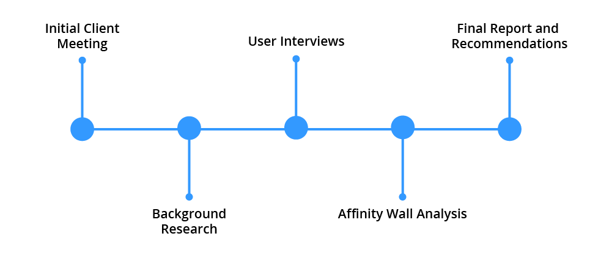
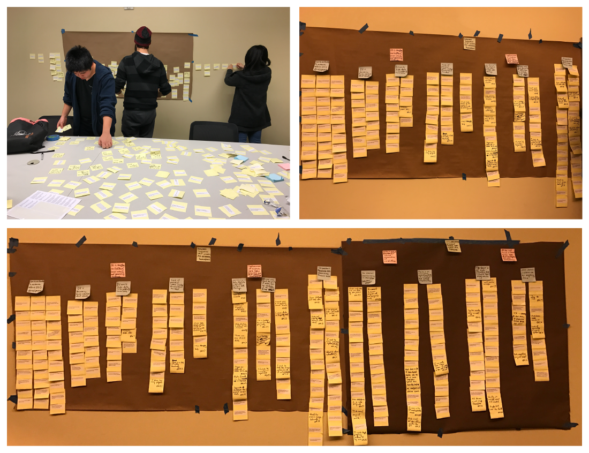

Overview
The Client
Data Driven Detroit(D3) is a civic tech startup located in downtown Detroit that aims to support the revitalization of Detroit by providing data-driven evidence to the city’s government and local non-profit organizations. D3 tasked our group with the challenge of improving their organization’s interval data management processes so that they can complete projects in a more timely and efficient manner.
The Problem
D3’s current methods for handling data internally do not scale with the increasing demand for their services and it is slowing down their current projects.
The Solution
A recommendations report based on our contextual inquiry methodology was given to the client.
My Role
Tasks I completed during this project include background research, interviews, affinity wall analysis, writing and editing the recommendation report.
Our Process

Background Research
In order for our team to become familiar with D3’s business model and industry, each member of our team conducted background research a multitude of topics which included:
- Industry standards for warehousing large datasets
- Management strategies for NGOs
- Recent history of Detroit’s financial troubles
- The current role of civic technologies in government
Contextual Inquiry
Our primary strategy for understanding our client’s problem was through use of contextual inquiry. Unlike normal interviews, contextual inquiry required our team to conduct our interview in our interviewee’s workplace and includes a period of observation of the user’s workflow. The intent of the process is to understand our user with the context of their environment. Our interviewees included those in management, technical, and administrative roles.
Each interview was conducted in a pair, with one note-taker and another asking the questions. Upon completion of our interviews, our team met to share our findings.
Interview Interpretation and Analysis
At end of each interview, our team meet for an interpretation session lead by the interviewer. Notes taken at the time of the interview were broken down into major ideas written on individual yellow post-it notes. Once all interviews and interpretation sessions were completed, we built an affinity diagram to find the overall themes and important ideas that emerged for our interviews. The process of building the affinity diagram involved arranging the yellow notes from the interpretation sessions into groups based on relationship and naming the group with a blue note. Then the blue notes were grouped into major themes under a pink note and finally the pink notes were organized under an green note that described the facts under them. This process revealed the major themes from our interviews.

Key findings
Using the affinity diagram method, several insights into the causes of D3’s data management problem were found. Some of the major findings include:
- There is no standardized way of naming cleaned datasets, resulting in each analyst labeling their own files in a slightly different way.
- Increasing responsibilities and workloads for staff resulted in discussions of storage practices becoming missing from team meetings.
- There is a lack of consensus amongst team members on how the new database should be structured.
Recommendations
Based on our findings, our team provided short and long term recommendations to improve their data storage practices going forward. I highlighted some of our key recommendations below.
Short term:
- As the development of the new database progress, internal development members should meet with analysts to demonstrate features. This ensures that both teams are communicating their needs and that features developed are useful for completing projects.
- Likewise, we recommended that D3 re-introduce their weekly internal development meeting so that project members are all on the same page in regards to what they should be working on.
Long term:
- In the long term, we recommend that D3 acts more proactively in providing data literacy workshops in order to improve accessibility to their work and make connections to potential future clients.
Outcomes
Recommendations Report
Our team presented our findings to the client and delivered our recommendation report. Our recommendations were very well received by the client and they have worked to incorporate them into their internal processes.
What our client said about our recommendations:
“It is very helpful to have your perspective, bringing fresh eyes and curiosity, helping really boil down our challenges to their essence. In particular, both the short- and long-term recommendations seem insightful and actionable, and we look forward to diving into these as a team.”
-Feedback from a Data Driven Detroit director
A full copy of the recommendation report can be provided upon request.
Reflection
This project was very memorable and served as a great learning experience about the application of UX methods in a consulting context. An important lesson I learned from this project was to watch what users do and not just what they say. Data Driven Detroit originally believed that their data challenges were attributable to database problems. While this had a some truth, we learned from observing users that they much to gain from interpersonal changes. These were improvements that could be made without waiting their for their developers to finish their database, and I was really excited when we discovered these insights because they would provide a more immediate impact for their great organization.